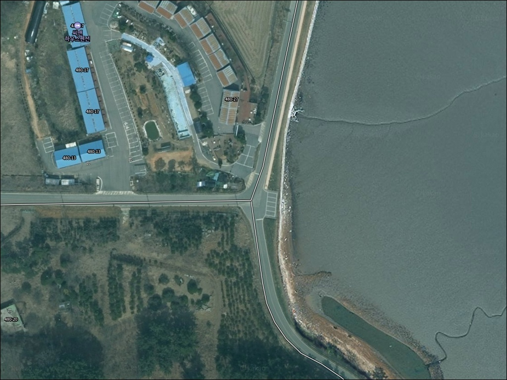
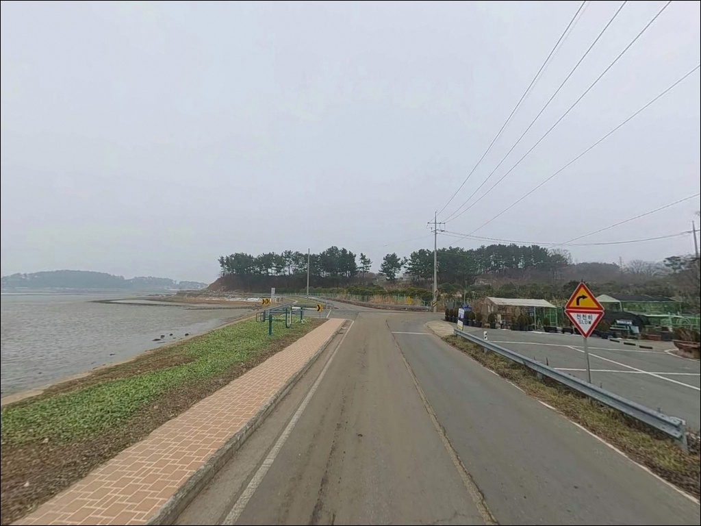
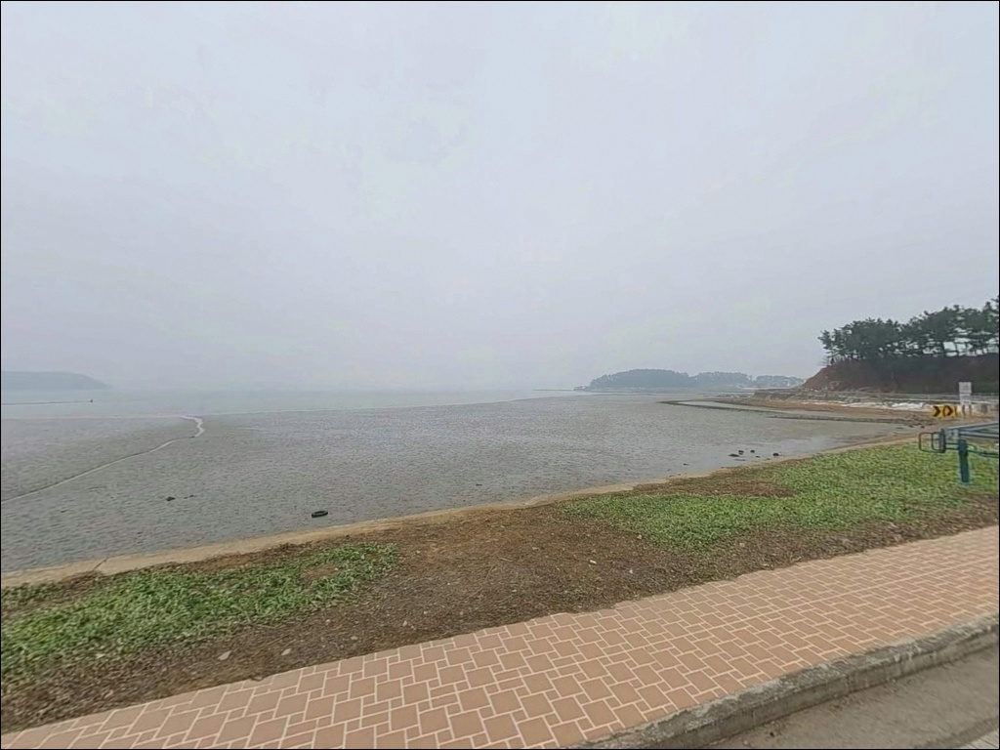
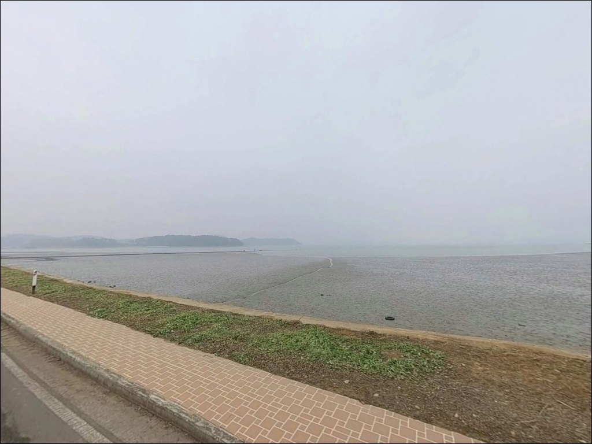
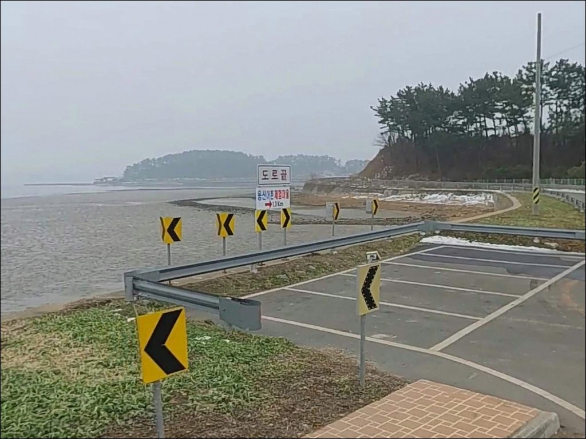
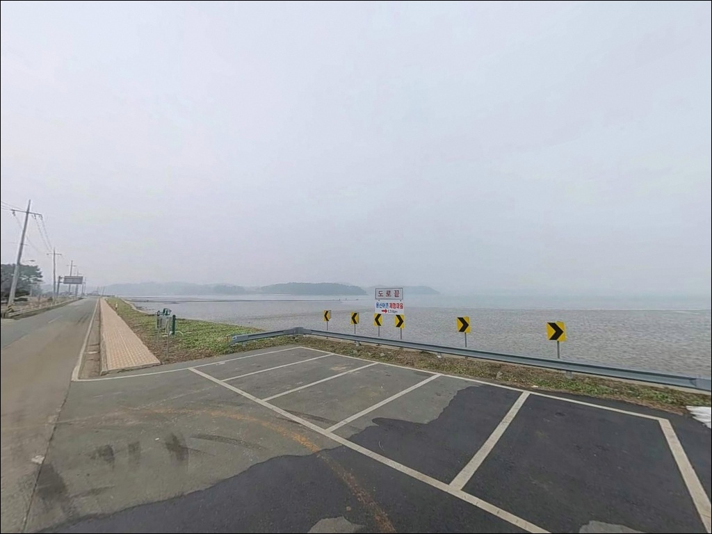
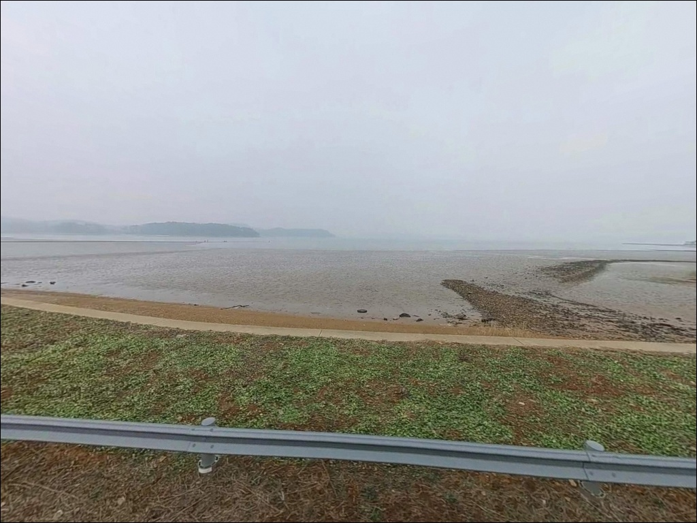
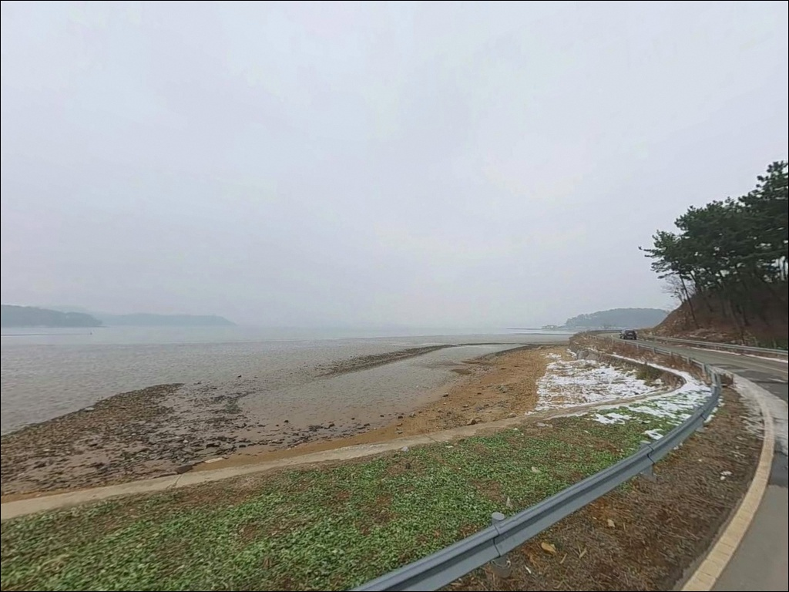
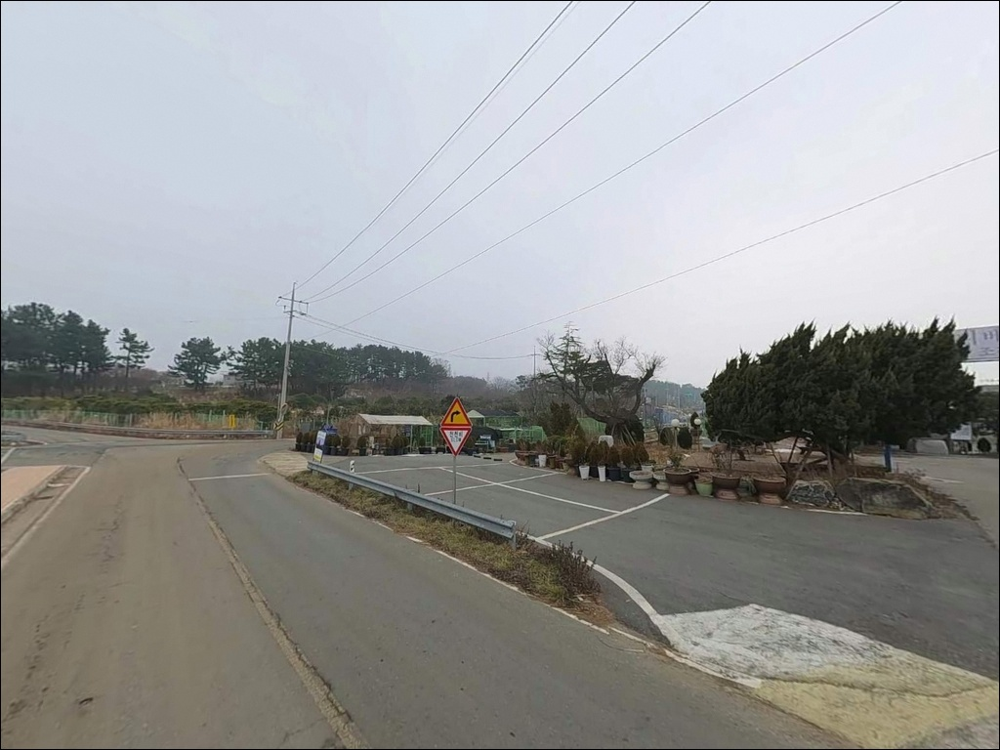

이 페이지에는 광고(제휴 링크 포함)가 있으며, 광고 링크를 통해 구매하면 운영자가 판매 수익 또는 수수료를 받을 수 있습니다. 포인트 사진: 카카오맵 스카이뷰·로드뷰. 이 페이지의 지도·사진 이미지는 카카오맵의 실제 서비스 이미지와 다를 수 있습니다.

용신리 삼거리 주차장
충남 태안군 근흥면 용신리 576-9
낚시 포인트로 기대하고 이 자리를 찾았다가
간조 타이밍에 진입하면 넓은 갯벌만 마주하게 됩니다.
서해 조차가 큰 근흥면 일대는
물때 계산 없이 진입하는 순간
어떤 채비를 써도 낚시 자체가 불가능한 상황이
만들어지는 구조입니다.
이 자리는 원안해수욕장과 용신어촌체험휴양마을로 이어지는
갯벌 해안 접근 거점에 가깝습니다.
주차장에서 바로 낚시가 되는 구조가 아니라
해안선으로 이동한 뒤 만조 전후 타이밍을 노리는
방식이 이 포인트의 기본 사용법입니다.
이 글은 용신리 삼거리 주차장의
진입 환경, 갯벌 해안 낚시 여건,
물때 판단 기준, 차박 조건을 중심으로 정리합니다.
조황 단정이나 특정 어종 보장은
이 글의 범위에 포함되지 않습니다.

용신리 삼거리 주차장은 근흥로에서
마을 진입도로로 이어지는 삼거리 교차점에 위치합니다.
2차선 포장도로가 연결되어 있어
일반 승용차는 물론 SUV와 중형 차량도
진입에 큰 어려움이 없는 편입니다.
삼거리 구조 특성상 회차 공간은
단독 선착장이나 방파제 진입부보다
여유 있는 편으로 추정됩니다.
주차장 규모와 노면 상태, 야간 개방 여부는
현장 안내판을 통해 직접 확인하는 것이 우선입니다.
삼거리 주변 공터 형태의 공간 외에
도로변 여유 공간이 분산되어 있을 가능성은 있으나
단정할 수 없습니다.
해안선까지 직접 차량 진입이 가능한지 여부도
현장에서 확인해야 합니다.
원안해수욕장 방면 갯벌 해안까지
도보로 접근하는 구조일 가능성이 있어,
낚시 장비가 많을 경우 이 동선을
출발 전 지도로 파악해 두는 편이 좋습니다.

용신리 삼거리는 마을 진입부 교차점 성격의 자리입니다.
야간에는 차량 통행이 줄어드는 편이지만
완전한 고립감보다는
마을 입구 주차장 분위기에 가깝습니다.
프라이버시를 우선하는 차박에는
제약이 있는 위치입니다.
가로등이 일부 설치되어 있을 가능성이 있어
야간 조명 수준은 완전 암흑보다 나을 수 있습니다.
만 내부 지형 특성상 파도와 바람 영향은
외항형 포인트보다 적은 편으로 추정되며,
야간에는 주민 이동과 통행 차량이
동선을 일부 공유할 가능성이 있습니다.
이 일대는 태안해안국립공원 근흥면 구역과
경계가 겹칠 가능성이 있습니다.
국립공원 구역 내에 해당할 경우
지정 장소 외 야영·취사가 원칙적으로 허용되지 않으므로,
출발 전 태안해안국립공원 관리소에
구역 포함 여부를 먼저 확인하는 것이 안전합니다.

삼거리 주차장 반경 내 편의점·마트·주유소에 대한
확정 정보가 없습니다.
완전 자급 체제로 진입하는 것이
현실적인 준비 방식이며,
식수, 얼음, 낚시 소품, 연료는
출발 전 모두 갖춰두는 것이 기본입니다.
인근에 용신어촌체험휴양마을 캠핑장이 운영되고 있습니다.
갯벌 체험과 캠핑 사이트를 함께 운영하는 시설로,
공식 야영지 이용을 원한다면
이 시설을 대안으로 활용할 수 있습니다.
시설 운영 여부와 예약 방법은
출발 전 사전 확인이 필요합니다.
반경 10km 방면 신진도 방향으로 이동하면
낚시 소품 구입이 가능한 인프라에
접근할 수 있습니다.
부족한 소품이 생겼을 때는
신진도 방면 이동 동선이
가장 현실적인 대안입니다.

가장 먼저 확인해야 할 것은 물때입니다.
근흥면 일대는 서해 조차가 매우 큰 구간으로,
바다타임에서 안흥 또는 태안 기준 물때표를 확인하고
만조 전후 1~2시간 타이밍에 맞춰
출발 시각을 역산하는 것이 기본 전략입니다.
사리 전후에는 간조 시 낚시가 불가능해지는
구간이 생길 수 있습니다.
갯벌 해안은 물이 들어오는 속도가
생각보다 빠를 수 있습니다.
갯골(갯벌 수로) 구간은 야간 이동 시
고립 위험이 있으므로
퇴로를 미리 파악해 두는 것이 중요합니다.
낚시 중 구명조끼 착용은 기본 안전 수칙이며,
야간 낚시 시에는 미끄럼 방지 장화와 헤드랜턴이 필수입니다.
태안해안국립공원 구역 해당 여부는
출발 전 관리소에 문의하거나,
현장 진입 시 안내판을 통해 확인합니다.
구역 내일 경우 야영·취사 방식을
조정해야 하므로 사전 확인이 먼저입니다.

용신리 일대는 태안반도 내만 방향으로
오목하게 들어간 만 구조 해안입니다.
외해 개방형 환경이 아니라
갯벌이 완만하게 발달한 내만형 지형으로,
독립된 방파제나 갯바위 구조물 없이
평탄한 갯벌 해안이 이어지는 구조입니다.
수중 지형이 고른 편이라 밑걸림 리스크는
암초 지형보다 낮을 가능성이 있습니다.
간조 시에는 넓은 갯벌이 드러나
낚시 가능 수심이 크게 줄어드는 구간이 생깁니다.
만조 전후 1~2시간이 이 포인트에서
낚시가 성립하는 핵심 타이밍이며,
사리 물때 전후에는 조차가 극대화되어
간조 시 낚시 자체가 어려워지는
상황이 발생할 수 있습니다.
조금 전후 물때를 우선으로 노리는 편이 좋습니다.
만조 전후 수심이 확보되면
들물과 날물 방향으로 조류 흐름이 살아나고,
이 구간이 바닥권 어종을 노리기에 적합한 타이밍입니다.
원안해수욕장 방향 해안선 구간도
함께 탐색해볼 만한 자리입니다.
만조 전후 타이밍을 맞추지 않으면
광범위한 갯벌만 확인하고 돌아오는 구조의 포인트입니다.
최신 조황은 가기 전에 꼭 직접 검색해 보시기 바랍니다.

이 포인트에서 가장 현실적인 낚시 방식은
원투낚시입니다.
완만한 갯벌 지형에서 만조 전후 들물 타이밍에
채비를 멀리 보내는 방식으로,
장구채비 또는 외바늘 원투채비가
이 구조와 잘 맞습니다.
우럭, 붕장어, 도다리 계열이
이 지형에서 기대해볼 수 있는 어종입니다.
들물 타이밍에 조류 변화가 있는 구간에서는
농어 루어낚시도 시도해볼 수 있습니다.
서해 만 내부 해안에서 들물 때
조류를 타고 이동하는 농어 패턴이
나타나는 경우가 있기 때문입니다.
만조 전후 해안선 인근 구간을
워킹하며 공략하는 방식이
이 지형 구조에 어울리는 접근입니다.
릴찌낚시는 만조 전후 수심이 확보되는
시간대에 가능성이 있습니다.
다만 간조 시간대에는 갯벌이 넓게 드러나
찌낚시 운용 자체가 어려워집니다.
입장 전 물때와 예상 수심 변화를
먼저 확인하고 채비를 결정하는 것이
이 포인트 운용의 기본 순서입니다.

삼거리 주차장은 낚시 포인트 자체가 아니라
태안 서해 갯벌 해안으로 이동하는 거점으로 활용해야
실패 확률이 낮아집니다.
갯벌 여건이 맞지 않거나
물때가 여의치 않을 때는
신진도·마도 방파제가 가장 현실적인 대안입니다.
신진도·마도 방파제는 외항형 구조로
수심이 안정적이며
원투·루어·찌낚시를 모두 운용할 수 있는
태안 근흥면 대표 포인트입니다.
인근에서 간단한 채비 구입이 가능한 편으로 알려져 있어
준비가 부족한 상황에서도
접근하기 수월한 대안입니다.
안흥항은 내항권과 외항권이 구분되어
원투와 루어를 함께 운용하기 좋은 구조입니다.
만조 전후 공략이 유리한 포인트로,
용신리에서 출발해 안흥항을 기점으로 잡고
상황에 따라 신진도 방면까지 이동하는 동선이
이 권역에서 가장 효율적인 플랜 B입니다.
신진대교 아래 공영주차장(충남 태안군 근흥면 신진도리 253)은
주차 구획 약 350면 규모의 넓은 노외 주차장으로,
낚시 거점 이동 시 베이스 주차로
활용하기 좋은 옵션입니다.

원투낚시나 루어낚시를 즐기면서
한적한 태안 서해 갯벌 분위기를 찾는 낚시인에게
용신리 삼거리 주차장은 나쁘지 않은 시작점입니다.
물때 타이밍을 맞추고 들어가면
원안해수욕장 방면 해안선에서
여유 있는 갯벌 낚시가 가능한 구조입니다.
반면 낚시 포인트 자체를 기대하고 방문하거나
물때 계산 없이 진입하면
드러난 갯벌만 확인하고 돌아오게 됩니다.
물때 확인, 자급 준비, 태안해안국립공원 구역 확인,
이 세 가지를 갖추고 간다면
태안 갯벌 낚시의 조용한 탐사 포인트로
기억될 수 있는 자리입니다.
편의시설 없는 마을 삼거리 주차장에서
갯벌 해안 방향으로 걸어 나가
들물을 기다리며 낚싯대를 드리우는 차박 여행자라면,
국립공원 구역 확인과 물때 준비만 갖추면
낚시와 차박을 조용히 즐길 수 있는
태안 근흥면의 숨은 거점이 될 수 있는 자리입니다.